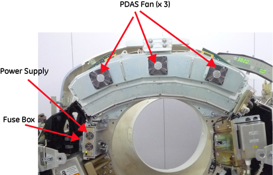
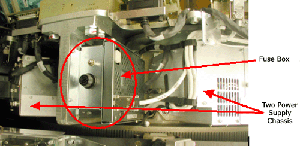
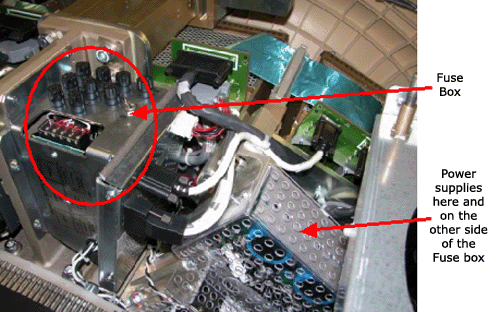

Operating Documentation
Direction 5181178-800, Rev# 16
BrightSpeed Select Service Methods Gen
Module Version 2.0, Version Date 5/27/10
Operating Documentation |
There are three potential DAS configurations for this system. Refer to the pictures below to identify the version you have. If there are service procedures for both DAS versions, then use the one that applies to your system. The primary difference between MDAS and GDAS 16 is the power supplies, the mounting of the DAS chassis, and the cabling. The DAS chassis’s, converter cards, and DCB are the same for MDAS and GDAS 16.
For Pancake DAS, the power supply and DAS structure are different from MDAS and GDAS.
The DAS type can be identified on the Common Service desktop Home page. Look on the left column under Data Acquisition System and you will see the DAS type currently configured for your system. Example entries are MDAS, MDAS_H16_16, GDAS_H16_16 and P16_G_HLT. The first part identifies the system as either having an MDAS, GDAS or Pancake DAS. This is manually configured during software load.
Note that (in Illustration 1) the power supply is at left of DAS and has a fuse board on it. There is a front cover with three fans mounted which enclosures all the DAS components. The DCB and DIFB boards locate in IFB boxes at back of DAS plate.
Illustration 1: Pancake DAS power supply and DAS outlook

Note that (in Illustration 2) the small fuse block with a single fuse holder and the supplies to the sides are contained within the chassis’ instead of being separately mounted.
Illustration 2: GDAS-16 Fuse block and power supplies

Note the fuse block with many fuses and the individually mounted power supplies shown in Illustration 3.
Illustration 3: MDAS Fuse block and power supplies
